Technologies:
View on GitHub
Initializing...
Hello, I'm
I |
A passionate Computer Engineering student who builds circuits, writes code, and bridges hardware with software to create meaningful technology.
Hi! I'm a Computer Engineering student who enjoys both hardware and software. I love working where circuits and code meet, building things that are useful and interesting.
I enjoy building simple web apps, and working with Arduino and embedded systems. I also have a strong interest in computer networking understanding how devices connect, communicate, and share data across systems fascinates me.
When I'm not studying or coding, I like tinkering with electronics, exploring new tech, and learning about IoT and AI. I believe good engineers keep things simple, think clearly, and never stop learning.
B.S. Computer Engineering
University of Bohol • 2023–2026
Relevant courses: Digital Systems, Microcontrollers, Data Structures, Computer Networks, Operating Systems, VLSI Design.
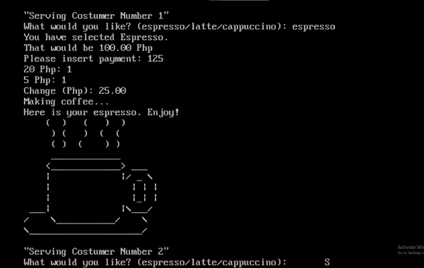
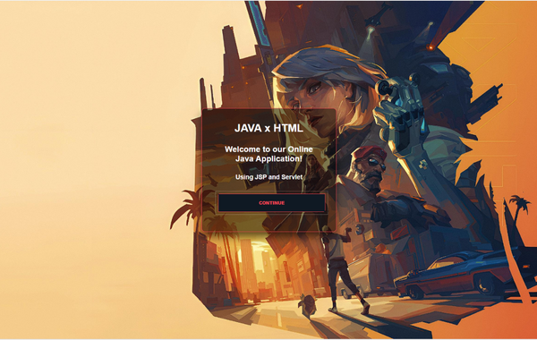
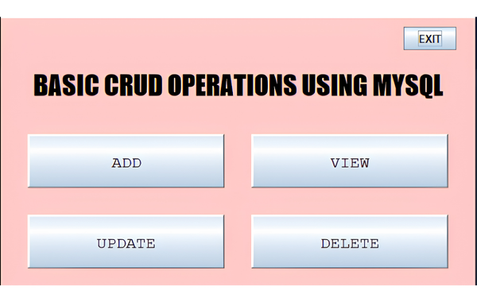
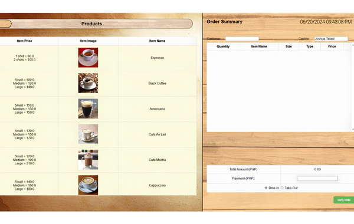
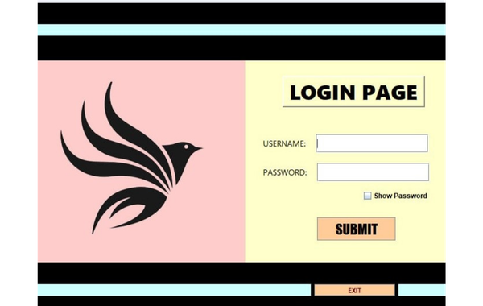
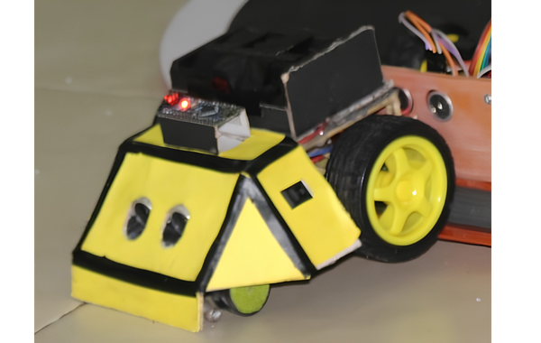
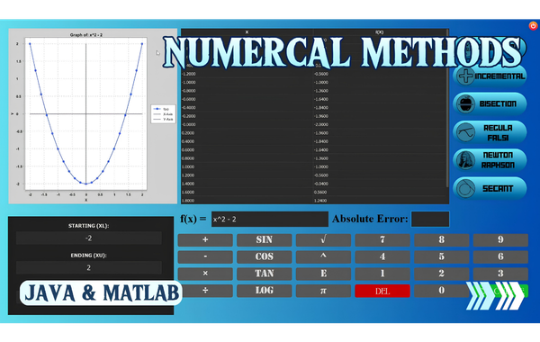
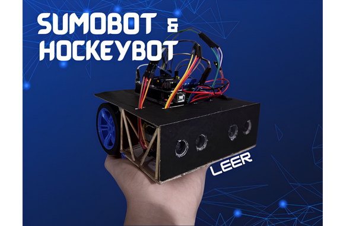
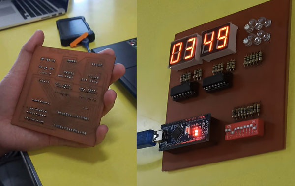
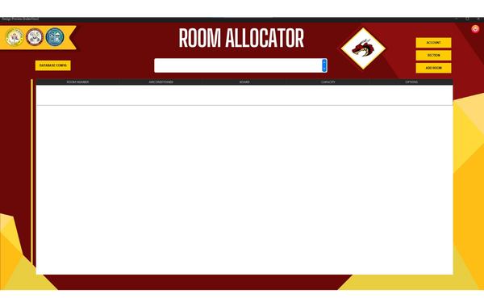
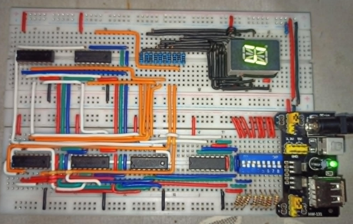
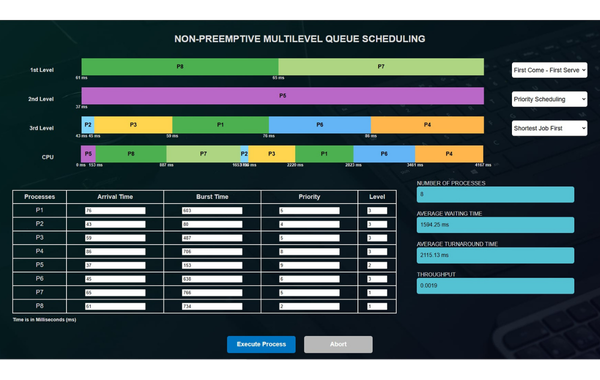
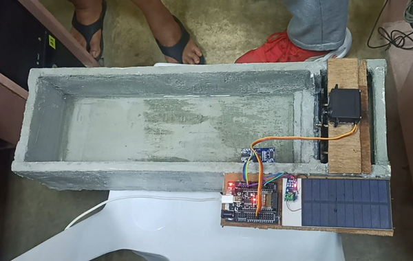
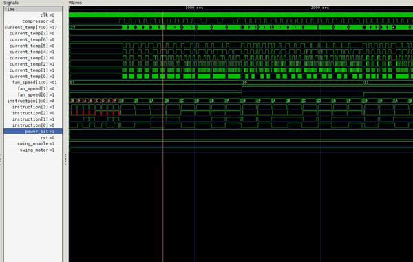
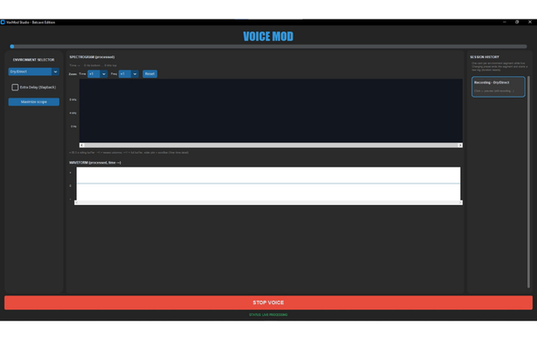
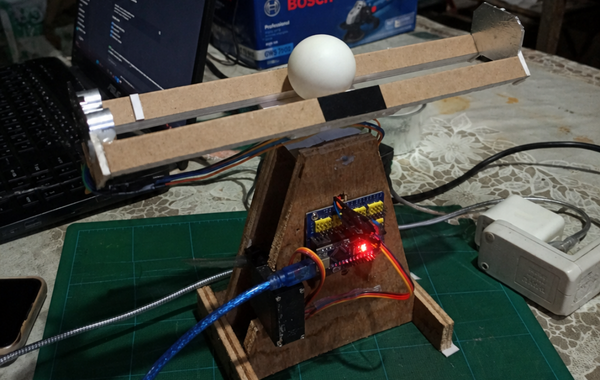
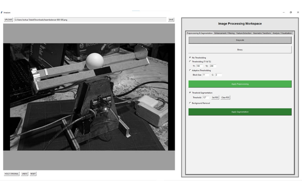
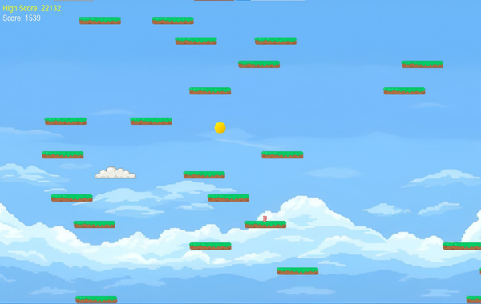
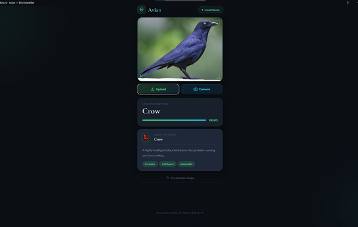
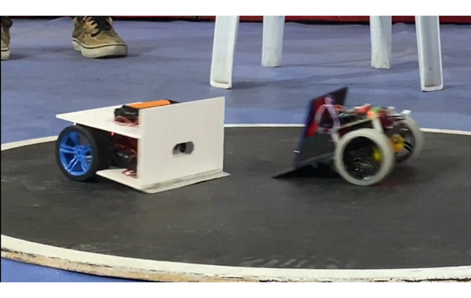
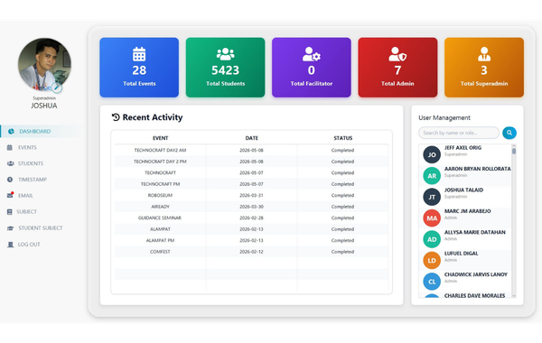
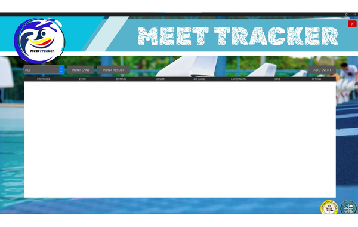
Have a project in mind, an internship opportunity, or just want to say hi? Feel free to reach out. I'm always open to collaborations and new challenges.